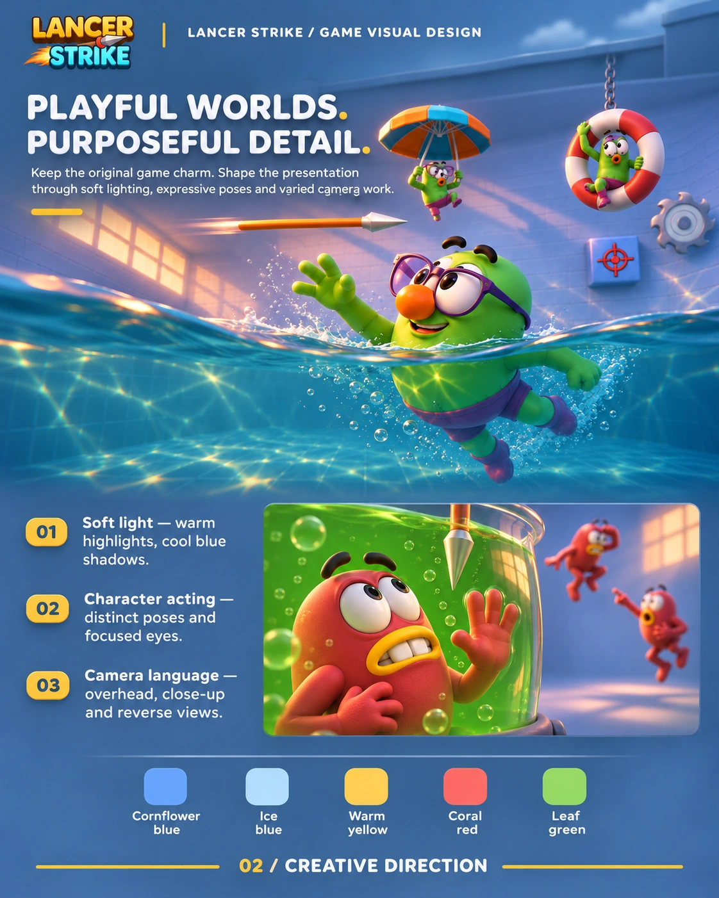
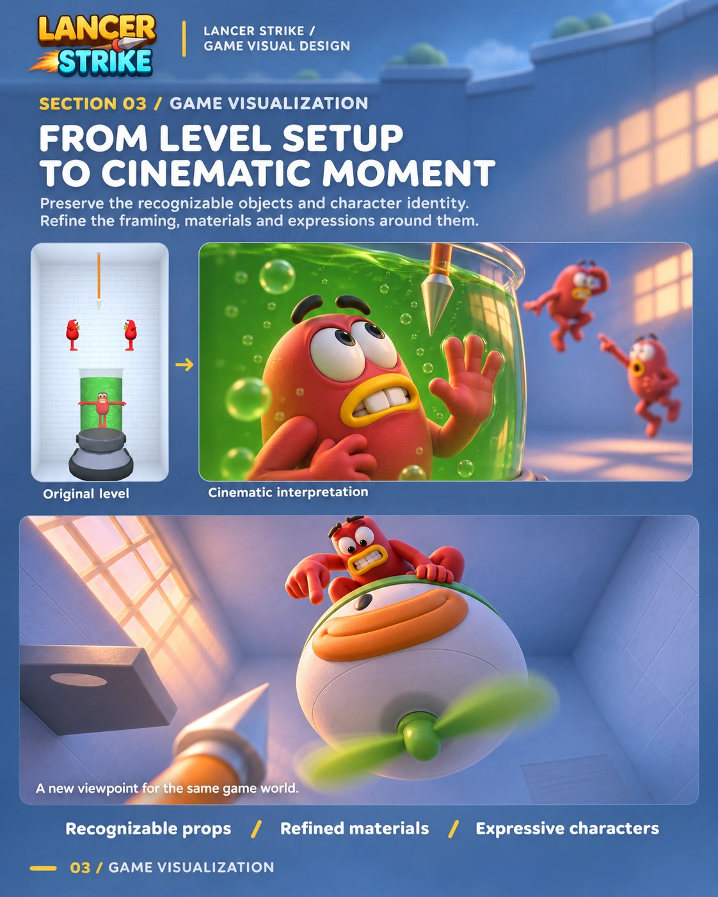
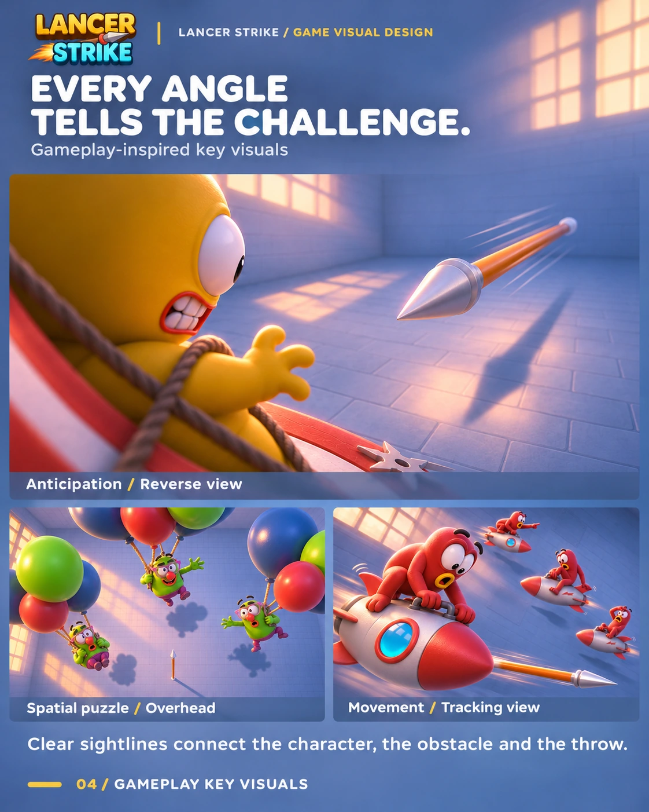

Snap Lancer
A visual design study for a hyper-casual aiming game built around quick spear throws, playful targets, and changing levels. The boards use the title Lancer Strike.




A visual design study for a hyper-casual aiming game built around quick spear throws, playful targets, and changing levels. The boards use the title Lancer Strike.


